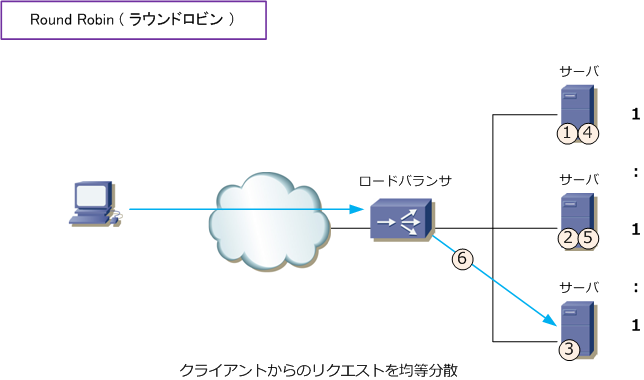
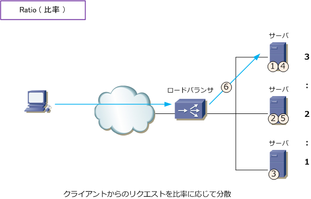
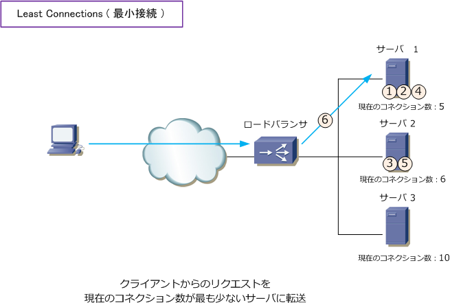
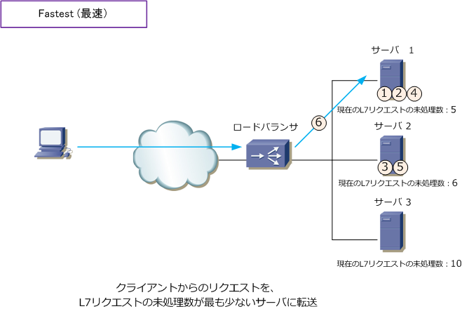
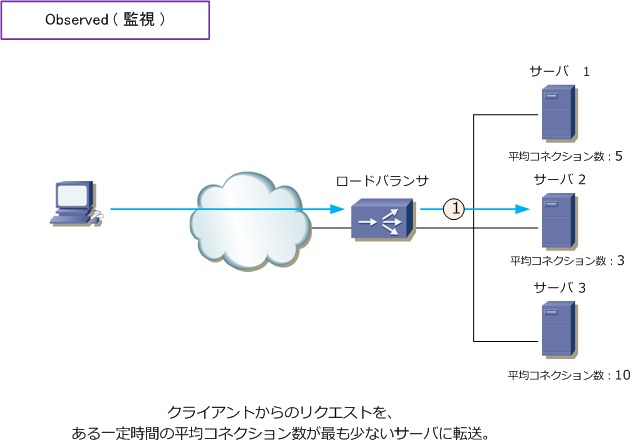

Load Balancer - Round Robin / Ratio / Least Connection / Fastest
ロードバランサの重要な3つの機能
ロードバランサには色々な機能があります。また、ロードバランサがシングルの場合と冗長化の場合とでは 使用する機能も大きく異なってきます。ここではシングル構成や冗長化構成に関係なくロードバランサ導入に 際し必須知識となるロードバラシング（負荷分散）、パーシステンス（セッション維持）、モニター（監視） の3つの重要な基本機能を紹介していきます。このページでは、ロードバラシングについて紹介していきます。
ロードバランサ - ロードバランシングの種類
ロードバランサに着信したパケットをサーバへ振り分けるロードバランシングにはいくつかの種類があります。 ロードバランシングの種類はスタティックとダイナミックの2種類に分類されます。使用実績が多い2つである ラウンドロビン（均等負荷分散）はスタティック、リーストコネクション（最小接続）はダイナミック方式。
以下のロードバランシングの種類は、F5の負荷分散装置（BIG-IP）で実装されている機能を紹介していますが 他メーカーの製品も基本的には同じような機能をサポートしています。また、色々な種類があるとはいえよく 使用されているロードバラシングといえば、どのメーカーでもラウンドロビンとリーストコネクションの2つ。
| ロードバラシングの種類 | 説明 | 分類 |
|---|---|---|
| Round Robin | ラウンドロビン。クライアントからのリクエストをサーバに均等に転送。 | スタティック |
| Ratio | 比率。サーバごとに重みを定義して、その割合に応じてサーバに転送。 | スタティック |
| Least Connections | 最小接続。現在のコネクション数が最も小さいサーバに転送。 | ダイナミック |
| Fastest | 最速。Layer7リクエストの未処理数が最も少ないサーバに転送。 | ダイナミック |
| Observed | 監視。ある一定時間の平均コネクション数が最も少ないサーバに転送。 | ダイナミック |
| Predictive | 予測。ある一定時間の傾向を解析して、平均コネクション数が減少している場合 より多く転送を行い、平均コネクション数が増加している場合は転送を少なくする。 |
ダイナミック |
| Dynamic Ratio | 動的比率。CPUやメモリ使用率が低いサーバに転送。前提として各サーバを Monitor機能による監視が必要となり、サーバにはSNMP Agent等が必要となる。 |
ダイナミック |
Round Robinではクライアントからのリクエストをサーバに均等に転送することから、下図ではクライアント からの6コネクション目は下図の通り転送されます。このようにあくまでも「1：1：1」の割合で転送します。

Ratioではクライアントからのリクエストをサーバに比率で転送することから、下図ではクライアントからの 6コネクション目は「 3：2：1 」の比率設定している場合、下図のように転送。Ratioを使用するケースは 負荷分散するサーバが異なるスペックである場合が多く、処理能力の高いサーバに対し比率を大きくします。

Least Connectionsでは、現在のコネクション数が最も小さいサーバに転送します。下図の見方を説明します。
現在のコネクション数がサーバ1が「5」 サーバ2が「6」 サーバ3が「10」とします。それがスタート地点で クライアントPCから6つのコネクション接続を行うとします。その場合は下図の転送順となり。クライアント からの5つのコネクションを接続した時点で、現在のコネクション数はサーバ1「8」 サーバ2「8」 サーバ3 「10」となります。従って、6つ目のコネクションはサーバ1またはサーバ2に割り振られるのですが、下図で サーバ1に転送しているのは現在のコネクション数が同じ場合、RoundRobinで転送するというルールのため。

Fastestでは、クライアントからのリクエストを、L7リクエストの未処理数が最も少ないサーバへ転送する ので下図のように転送されます。下図は、先のLeast Connectionsの解説と同じ考え方ですが、?@ ～ ?Dは 下図で「現在のコネクション数」ではなく「L7リクエストの未処理数」としてカウントする動作を示します。

Observedでは、クライアントからのリクエストをある一定時間の平均コネクション数が最も少ないサーバに 転送することから、下図の場合サーバ2にパケットが転送されることになります。ある一定時間とはどこから どこまでの時間なのかはメーカ（F5）として公開していません。

Predictiveはある一定時間の傾向を解析して、平均コネクション数が減少している場合、より多く転送し、 平均コネクション数が増加している場合は転送を少なくするのですが、これも「ある一定期間」が非公開。
冒頭の説明通り、一般的にRound RobinまたはLeast Connectionsが最も使用される負荷分散方式なので この2つをしっかり理解しておきましょう。
なお、クライアントの送信元IPアドレスやポート番号やCookie情報に基づいてパケットを振り分ける方式は ロードバランシング（負荷分散）ではなく、パーシステンス（セッション維持）の方式に分類される技術です。